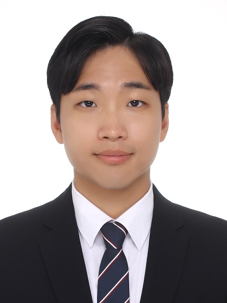

I am Woojin Bae, a Master's student in Chemical and Biological Engineering at
Seoul National University.
My research interests lie at the intersection of artificial intelligence and materials science, with a focus on AI-driven materials discovery, synthesis planning, and autonomous experimentation.
>>>Please check out my list of projects!